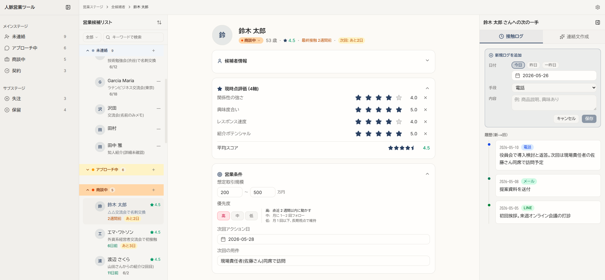

人脈営業ツール
「誰に・いつ・何を話したか」を取りこぼさず、
次の一手まで AI が下書きする ──
AI-Driven School 第5回宿題 / personal-network-sales
人脈営業の「次の一手」を、
時系列で見える化するツール
既存のつながり・紹介・コミュニティで広げる営業を支える4ペイン構成
ここから先、この仕組みを章ごとに丁寧に説明していきます。
まずは登場する専門用語の「ミニ辞書」から。
最初に — この図解で出てくる用語
この図解には、IT・営業の両方の専門用語が出てきます。読み進めながら戻って確認できるように、まずまとめておきます。
ペイン (Pane)
画面を区切ったひとつの領域のこと。本ツールは画面を縦に4分割して、それぞれを Pane1〜Pane4 と呼びます。
workspace-ui-kit
AI-Driven School が配布した、採用管理 UI のサンプル（テンプレート）。本ツールはこれを土台にして営業向けに作り変えたもの。
API（エーピーアイ）
Application Programming Interface の略。アプリと外部サービスをつなぐ「窓口」。本ツールは Notion API と Anthropic API という2つの窓口を使います。
Notion / Notion DB
メモ・タスク・データベースを1つにまとめられるツール。DB（データベース）はその中で表形式にデータを管理する機能。本ツールはこの DB を裏側で読み書きする。
Claude / Anthropic API
Anthropic 社が作っている生成 AI が Claude（クロード）。アプリから呼び出すための窓口が Anthropic API。本ツールは連絡文の下書きをお願いするためにこれを使う。
Vision（ビジョン）
AI に 画像も読み取らせる機能。本ツールでは LINE のスクリーンショットなどを連絡文作成 AI に渡すために使う。
ステージ
営業の進み具合を表す段階。未連絡 → アプローチ中 → 商談中 → 契約の順に進む。「失注（成約しなかった）」「保留」も別段階として管理。
接触ログ
「いつ・どの手段（電話/メール/LINE…）・何を話したか」を1件ずつ積み上げた履歴のこと。「ログ（log）」は「記録」という意味の IT 用語。
紹介ネットワーク（3つの語彙）
バック人脈＝紹介の後ろ盾（例: 「△△会の幹事」）。
間柄＝経由したコミュニティ（例: 「大学同期会」）。
親レコード＝直接の紹介者となった別の候補者。
楽観更新（Optimistic Update）
ボタンを押した瞬間に画面を先に更新し、サーバーへの保存は裏でこっそり進める方式。体感を速くするための定番テクニック。失敗したら画面を元に戻す。
A. そもそも何を解決するツールか
作者は業務提携先とのパートナーシップ契約を結び、独自に営業活動を回し始めた段階にいます。営業の相手は、業種を問わず、自分の人脈から派生する人たち（既存知人・紹介経由・コミュニティの仲間・交流会で出会う新規）。
数十人を同時並行で追いかけることになると、「誰に・いつ・何を話したか」を頭で覚えていられなくなります。すでに Notion で候補者一覧は持っているのですが、Notion の標準機能だけでは届かない不満が出てきました。
- Notion の営業候補リストには「進捗詳細」というメモ欄が1つしかない。新しい連絡内容で前の記録を上書きするしかなく、時系列で振り返れない
- 朝イチで「今日アプローチすべき相手」を絞り込むのに、Notion のビュー（表示モード）を毎回切り替える手間がかかる
- 「久しぶりに連絡したい人」「クロージング（契約直前の意思確認）」「契約後の紹介依頼」など、営業の各シーンで毎回ゼロから文章を考える時間がもったいない
- 接触ログ（接触の記録）が新しい行としてどんどん積み上がる。前の記録は上書きされない
- ステージタブを押すだけで3秒で「今日の対象者」が見つかる
- 候補者情報・接触履歴・紹介ネットワークを AI に渡して、連絡文をワンクリックで下書きさせ、コピーして送るだけ
ここがポイント
このツールは「Notion をやめる」ためではなく、Notion で抱えている人脈データに『時系列の履歴』と『次の一手の下書き』を載せるためのものです。データは Notion に置いたまま、UI だけ営業のテンポに最適化します。
B. 営業フローとカバーする相手
では、このツールが扱う「営業活動」とは具体的にどんな流れでしょうか。候補者を登録してから契約に至り、さらにそこから別の紹介が生まれるまでを、一本の流れで見ていきます。
営業の現場で「フェーズ」「ステージ」と呼ばれるのは、案件の進み具合を分類する段階のこと。本ツールでは Notion DB で元から決まっていた 6 段階（未連絡・アプローチ中・商談中・契約・失注・保留）を使います。
案件が進む流れ（4 段階 + サブ 2 段階）
サブステージ（メインの流れから外れたもの）
特徴的なのは、契約で終わらず、そこから派生紹介（既存のお客様から別の方を紹介してもらう）が起きて、再び案件のサイクルが回る点です。これは「人脈ベース営業」が大切にしている考え方。1人の契約が次の縁を呼びます。
では、「案件の入り口」となる候補者は、どこから入ってくるのでしょうか。本ツールが対象にする 4 つの経路を整理しておきます。
既存の知人
久しぶりの再連絡から入る
紹介経由
既存知人が後ろ盾（バック人脈）になる
コミュニティ・同期
大学同期・社外勉強会など
新規（これから）
交流会・仕事先で出会う
補足: 「業種縛りなし」とは
一般的な営業ツールは「IT 業界向け」「医療向け」のように業種で絞られがちですが、本ツールは 関係性ベースで営業を組み立てるため、相手の業種は問いません。提携サービスを「縁のある人から順に提案していく」のが基本姿勢です。
C. 画面構成 — 4ペインのワークスペース
ここからは、実際の画面の話に入ります。本ツールは画面を縦に4つに区切り、左から右へ視線が流れるように作られています。これを「4ペイン構成」と呼びます（再掲：ペイン＝画面を区切ったひとつの領域）。
なぜ4分割なのか？ 営業の動作を分解すると、自然に「絞り込む → リストから選ぶ → 詳細を見る → 次の一手を打つ」の4ステップになるから。各ペインがこの1ステップずつを担当します。
ステージ
- 未連絡12
- アプロ中8
- 商談中3
- 契約1
- ─ サブ ─
- 失注5
- 保留2
営業候補リスト
-
○○商事田中さん●高 05-15
-
△△医療法人鈴木さん◐中 05-20
-
□□NPO法人佐藤さん◐中 05-22
候補者ダッシュボード
△△医療法人 / 鈴木 太郎さん
経由: 大学同期会
バック人脈: △△会幹事
紹介元: → 山田さん
次回: 05-15 電話再フォロー
次の一手
履歴（新→旧）
◉ 05-10 電話
役員会で検討と返答
◉ 05-08 メール
提案資料送付
◉ 05-05 LINE
初回挨拶
実画面 (Phase 1 ローカル動作)

実際の画面 (鈴木 太郎 さんを選択中)。Pane3 の「現時点評価 (4軸)」と「営業条件」が開いた状態で、星クリックで評価を直接編集できる。 右端の Pane4 接触ログタブには直近 3 件の履歴がタイムライン表示されている。 30 名のサンプル候補者には日本人・海外名 (英語/カタカナ表記) ・データ欠損パターンを混在させて、運用上のさまざまなケースに対応している。
| ペイン | 役割 | 参照するデータ |
|---|---|---|
| Pane 1 | ステージタブで絞り込み （メイン 4 + サブ 2） |
営業候補リストDB 「進捗状況」 |
| Pane 2 | 選択ステージの候補者一覧 期限が近い順に並ぶ |
営業候補リストDB |
| Pane 3 | 選択候補者の全情報 紹介ネットワークも表示 |
営業候補リストDB + 間柄DB |
| Pane 4 | タブで切替: 接触ログ / 連絡文作成 |
接触ログDB + Anthropic API |
なぜ右端の Pane4 がタブになっているのか
元の workspace-ui-kit テンプレートでは Pane4 が「面接ステージの詳細編集」専用の領域でした。本ツールではここを「次の一手を打つ部屋」と位置づけて、「過去を見る（接触ログ）」と「未来を作る（連絡文作成）」を1か所に同居させています。横スクロールも別画面遷移もなしで、両方アクセスできるのがミソです。
D. Pane4 タブA — 接触ログを時系列で積む
Pane4 の左タブが「接触ログ」。候補者ごとに、過去の接触を新→旧で並べて見られるようにしてあり、画面上部のフォームから新しいログを1件ずつ追加できます。
記録するのは「いつ・どの手段（電話/メール/LINE/訪問/オンライン会議/SNS/その他）・何を話したか」の3つだけ。フォームの「次回アクション」欄も同時に埋めると、Pane3 の予定もまとめて更新されます。
新規ログ追加
履歴（新→旧）
役員会で導入検討と返答。次回現場責任者同席で訪問予定。
提案資料を送付
初回挨拶。来週オンライン会議の打診
保存ボタンを押した瞬間、履歴リストに新ログが先に表示されます。ユーザーは次の作業へすぐ移れて、Notion への書き込みは裏でこっそり進行します。これが「楽観更新」のしくみ。
楽観更新（Optimistic Update）のしくみ
履歴リストに新ログが表示される（体感ゼロ秒）
バックグラウンドで本保存（ユーザー待たない）
そのまま画面維持。完了。
画面から該当ログを消し、入力値をフォームに復元してトースト通知
用語: トースト（Toast）
画面の隅に「ピョコッ」と一定時間だけ表示される小さい通知のこと。パンが焼けて飛び出すトースターから命名されました。保存成功・失敗・エラーなどを邪魔せず伝えるための、Web アプリの定番表現です。
E. Pane4 タブB — AI に連絡文を下書きさせる
Pane4 の右タブ「連絡文作成」が、このツールの一番の見せ場です。候補者の情報・直近の接触ログ・紹介ネットワークを Claude（生成 AI）に渡し、その人にぴったり合わせた連絡文の下書きを返してもらう機能。
シーン（用途）と媒体（伝達手段）を選び、必要なら過去のやり取りを画像で添えて「生成する」を押すだけ。営業フェーズ全体をカバーする11シーン、3つの媒体、過去のやり取りを文面または画像で渡せる仕組みを順番に見ていきます。
カバーする11シーン（営業フェーズ全体 + 派生紹介の連鎖）
左のタグがそのシーンで使う営業ステージ。同じステージでも「営業観点」「商談観点」「クロージング観点」のように論点が違う場面はシーンを分けています。
- 未連絡 ① 初回声かけ（既存知人）／ 「お久しぶりです」系
- 未連絡 ② 初回声かけ（新規の人）／ 交流会で出会った直後
- 未連絡 ③ 紹介依頼／ 共通知人経由で新規開拓
- アプローチ中 ④ フォローアップ／ 「先日の件ですが」系
- 商談中 ⑤ 提案・サービス紹介／ 価値→根拠→次のステップ
- 商談中 ⑥ 商談・条件すり合わせ／ 導入時期・予算感の整理
- 商談中 ⑦ クロージング・意思確認／ 「ご導入の方向性」確認
- 契約 ⑧ 契約締結・条件確定／ 契約書・開始日・支払条件
- 全ステージ ⑨ お礼／ 紹介・面会・契約への感謝
- 契約後 ⑩ 派生紹介の依頼／ 既存知人からもうお一方
- 失注/保留 ⑪ 再アプローチ／ 時間を置いた再接触
⑩派生紹介の依頼が、人脈ベース営業の核心。契約・お礼の流れの自然な延長として「もうお一方紹介してください」をお願いするためのシーンで、関係性ができている前提だからこそ成り立ちます。⑩で得た縁が①〜③の入り口に戻ってきて、紹介の連鎖が回り続けます。
対応媒体（3種）
-
メール
件名 + 本文・敬語・段落構成 -
LINE
短文・親密トーン -
電話用トーク台本
話し言葉・要点リスト
過去のやり取りも AI に渡せる
メールはテキストコピーが早く、LINE はスクリーンショットの方が早い。場面に応じて両方を使い分けられます。
用語: Vision（ビジョン）
AI が画像を「見て」内容を読み取れる機能のこと。Claude Sonnet 4.6 など最新の AI モデルが備えています。本ツールでは、LINE のスクリーンショットを Claude に渡すと、相手の温度感・話題・口調を読み取り、それを反映した自然な下書きを生成してくれます。画像1枚あたり約1500トークン（AI が処理するデータ量の単位）を消費するので、3枚までを目安にしています。
生成フロー
（任意）
文面/画像（任意）
満足しない場合は、ワンクリックで微調整
AI に渡す「文脈情報」
Claude が高品質な下書きを返すには、「相手のことをよく知っている」状態である必要があります。本ツールでは下記をひとまとめにして渡します。
- 候補者の基本情報（社名・氏名・連絡先・備考の業種など）
- 直近3件の接触ログ（古いログは省く ── トークン肥大化を避けるため）
- 紹介ネットワーク（バック人脈・間柄・親レコード）
- ユーザーの補足（「来週の展示会の件で…」など、その回の用件）
- 過去のやり取り（任意）（文面 or 画像で「先方の温度感」を伝える）
ボタンを押して送信は「しない」
生成された下書きはコピーボタンでクリップボードに入れるだけ。LINE やメールへの送信は人間が最終確認してから手動で行います。「文章を一発で書かせる」のではなく、「下書きという土台を最速で用意して、人間の最終ジャッジに集中する」設計です。
F. 裏側のデータの流れ
ここまでで「画面で何ができるか」は見えたはず。最後に、そのデータがどこを行き来しているかを整理しておきます。営業の現場でツールを使う人は意識する必要はありませんが、トラブル時の問い合わせや、引き継ぎ時の説明に必要な知識です。
本ツールは PC のローカル（手元の環境）で動き、必要に応じて外部の Notion と Anthropic の2つのサービスと話します。
全体構成
ユーザーの PC（ローカル）
Notion API
候補者データと接触ログを読み書きする窓口
Anthropic API
連絡文の下書きを Claude にお願いする窓口
Notion DB の関係（候補者 1 : N 接触ログ）
「1:N（いち たい えぬ）」は1人の候補者に対して、複数の接触ログがぶら下がる関係のこと。1人を電話で3回、メールで2回、LINE で5回触ったら、その人のレコードに紐づく接触ログが10件できます。
営業候補リスト DB
既存・流用
- 顧客企業名
- 顧客名
- 進捗状況（ステージ）
- 優先度
- 次回アクション期限
- 最終連絡日 ★自動更新
- バック人脈 / 間柄 / 親レコード
- ... 計19プロパティ
接触ログ DB
新規・最小限の4プロパティ
- 件名 （自動生成）
- 日付 ★必須
- 手段 ★必須
電話/メール/LINE/訪問/
オンライン会議/SNS/その他 - 内容
- 候補者（リレーション）★必須
「最終連絡日」が自動更新される理由
接触ログを1件追加すると、本ツールは Notion に2つの書き込みを行います。①接触ログ DB に新ページを作成、②候補者の「最終連絡日」を新ログの日付で上書き。これにより、候補者リストの並び替えや「○日連絡してない人」抽出が、追加クエリなしで即座にできるようになります。人力で覚えなくて良いことは、ツールが自動で同期するのがコンセプトです。
G. 設計・実装で工夫したポイント
最後に、このツールを作る過程で特にこだわった判断を6つ紹介します。「正解の作り方」ではなく、「この場面で、なぜこっちを選んだか」の記録です。
① grill-me で1問ずつ詰めた
grill-me は AI に「設計の分岐を1問ずつ質問してもらう」自問自答スキルのこと（grill = 問い詰める）。
いきなりコードを書き始めず、計画段階で AI と対話して「なぜこの判断をしたか」を docs に残しました。後から仕様変更が出ても、判断ログを辿って影響範囲を考えられます。
② 既存 Notion DB を尊重
「理想のスキーマ」を新規 DB で作る誘惑を断ち、既存の19プロパティをそのまま流用。データ移行ゼロ、既存の Notion ワークフローを壊さない。
将来 UI を捨てても Notion 側にデータが残る形を維持しています。
③ 接触ログ DB だけ追加
ツールの生命線である「時系列の履歴」だけを新規 DB として追加し、会社 DB・担当者 DB の分離は見送り。同時進行が数十件規模の今は、階層化のメリットが出ません。過剰設計しない判断の例です。
④ Pane4 をタブ化
テンプレートでは「ステージ詳細編集」専用だった Pane4 を、接触ログ + 連絡文作成のタブ切替に。「過去を見る」と「未来を作る」を1か所に集約し、横スクロールも別画面遷移もなしで両方アクセスできます。
⑤ 連絡文に Vision 対応
過去のやり取りを「文面コピー」と「スクリーンショット画像」の両方で AI に渡せる設計。メールはテキスト、LINE は画像、と場面で使い分けられます。AI に温度感・話題・口調を読み取らせて反映。
⑥ モック先行
モック＝本物のデータの代わりに、それっぽいサンプルデータを使った仮実装のこと。
Notion / Anthropic API のセットアップが終わる前から、接触ログ・連絡文タブを「サンプルデータで動く状態」に。発表時のデモも API なしで完結。後で本物の API に切り替え可能。
H. 苦戦したポイント
上で書いた「工夫」は、実は最初から決まっていたものではありません。何度も考え直して、ようやくたどり着いた答えのほうが多いです。ここでは、特に時間をかけた 2 つの場面を正直に書いておきます。
「採用管理」→「人脈営業」への発想転換
配布されたひな形は採用管理ドメイン。営業ツールに変えるとき、最初は「ラベルだけ書き換えれば良い」と考えていました。
- • 「応募者」を「営業候補」に置換すれば終わり
- • 「面接ステージ」を「営業フェーズ」に名前変更
- • 「採点 4 軸」をそのまま流用
- • 採用は「1人を見極める」、営業は「同時に何十人と関係を維持する」
- • 採用は「面接が終われば完結」、人脈営業は契約後も派生紹介で続く
- • 4 軸スコアの意味も全く別物 (実績→関係性の強さ など)
気づき: 採用ツールにあった「Pane4 = ステージごとの面接記録」を、そのまま流用すると営業の動線に合わない。「過去 (接触ログ)」と「未来 (連絡文の下書き)」を 1 か所で同居させる発想は、ここから生まれました。ひな形をそのまま使えるという思い込みを 1 度壊すのに時間がかかりました。
連絡文作成「11 シーン」にたどり着く過程
最初は「初回 / フォロー / お礼」の 3〜4 シーンで足りると思っていました。実際は AI と何度も対話して 11 シーンまで広がりました。
気づき: 「自分が普段ぼんやり区別していた営業の場面」を、AI に詰められて初めて言語化できた。11 シーンは AI に「教えてもらった」のではなく、AI が問いを投げてくれて自分の中から「引き出された」ものです。これは grill-me スキルの本領発揮で、自分一人では絶対にたどり着けなかった解像度でした。
まとめ — 覚えて帰ってほしい3つのこと
長い図解を最後まで読んでいただきありがとうございます。ここまでの話を、3点に絞ってお伝えします。
Notion を「やめる」のではなく、Notion に「載せる」ツール
既存の人脈データはそのまま Notion で管理。本ツールは、その上に「時系列の接触ログ」と「AI による連絡文の下書き」という2つの新しい体験を載せます。データを置き換えない、UI だけ営業のテンポに最適化するアプローチです。
4ペインで「絞り込み→選択→詳細→次の一手」を1画面に
左から右に視線を流すだけで、営業の基本動作が完結します。特に右端の Pane4 をタブ化して「過去を見る（接触ログ）」と「未来を作る（連絡文作成）」を同居させたのが、このツールの特徴です。
AI は「最終決定」ではなく「最速の下書き」担当
Claude が紹介ネットワーク・接触履歴・LINE のスクリーンショットまで踏まえて下書きを作りますが、最終的に送るのは人間。「ゼロから書く時間」を AI が肩代わりし、人間は最終確認に集中するという関係性です。
人脈は、記録と次の一手で「資産」になる。
名刺交換しただけ、LINE 交換しただけでは、人脈は記憶でしかありません。「いつ・何を話したか」を残し、「次の一手」を AI と一緒に組み立てる場所があれば、それは時間とともに育つ資産になります。このツールが目指しているのは、そういう状態です。